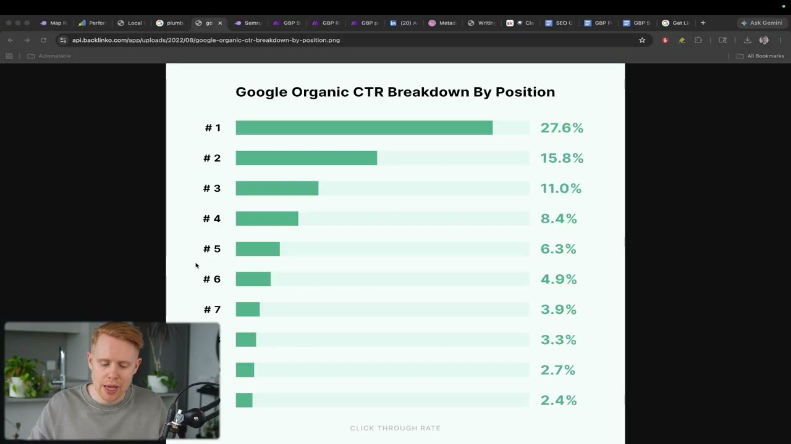
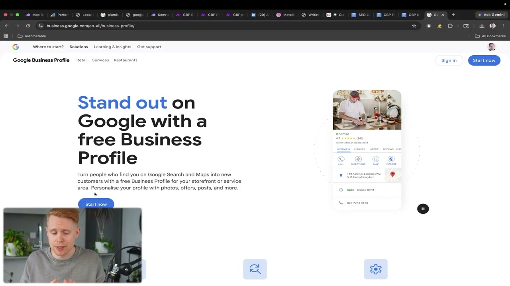
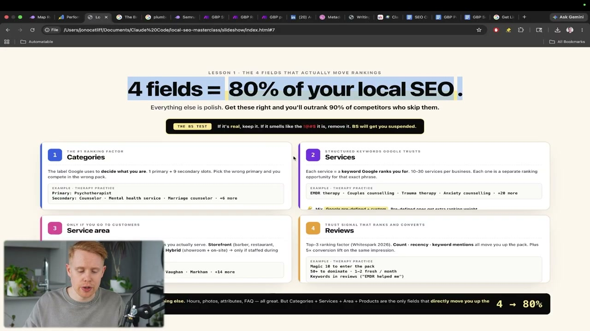
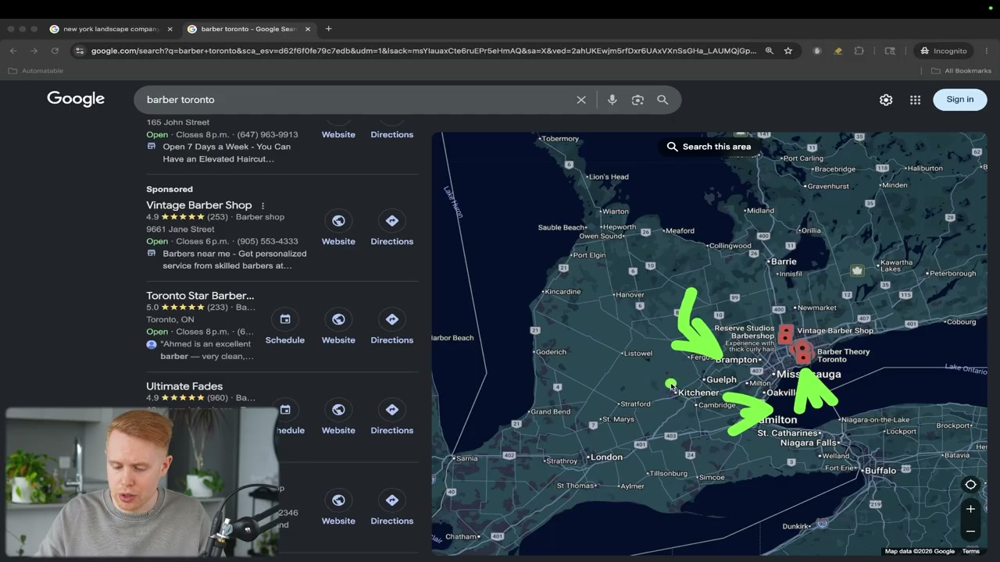
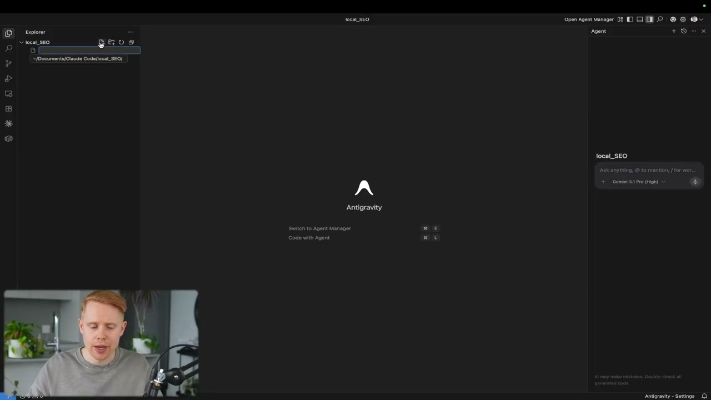
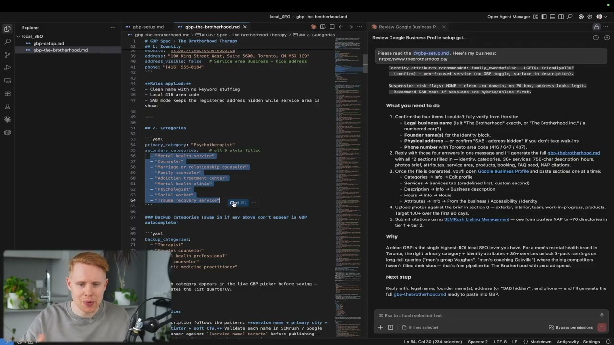
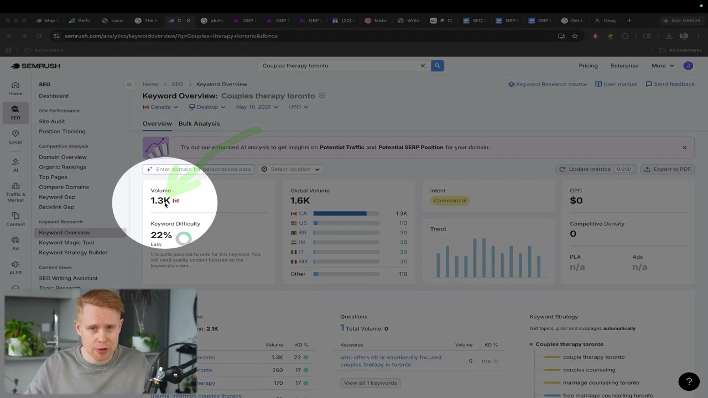
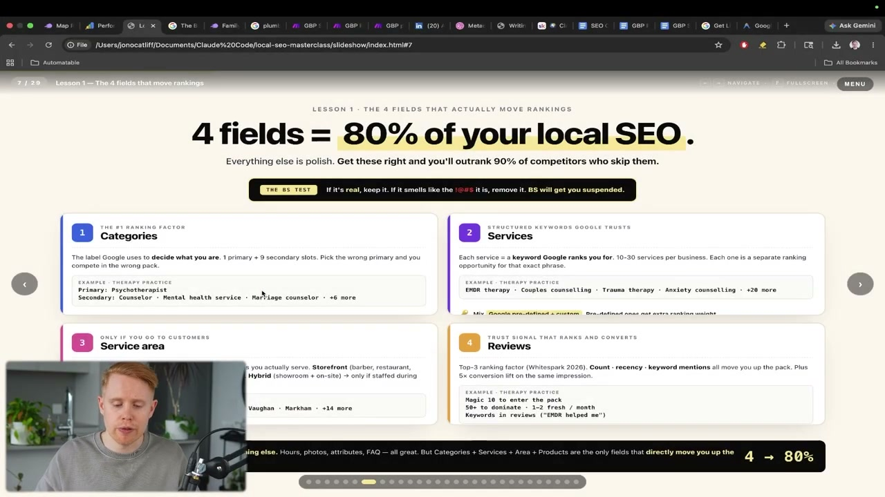
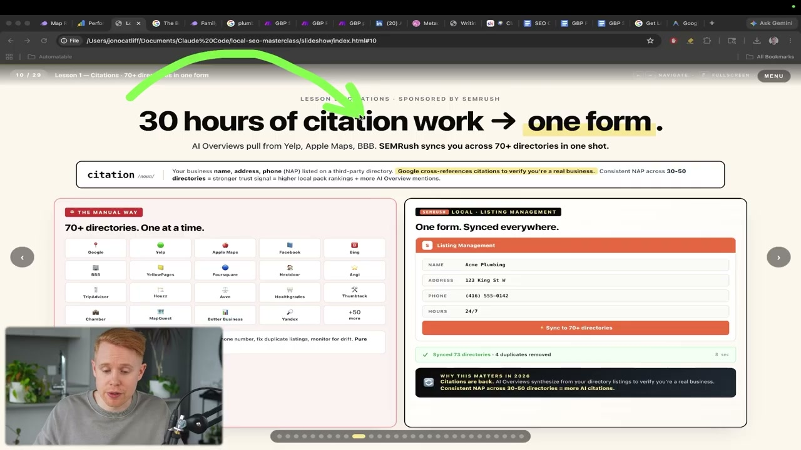
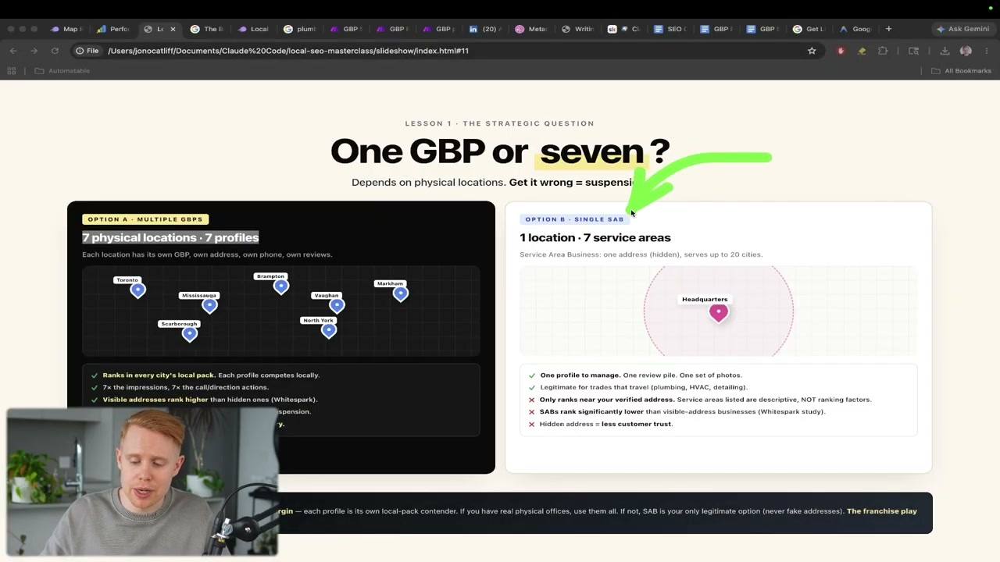

이 글은 전체 3편 중 1편입니다. 긴 영상을 주제 흐름에 맞춰 나누어 정리했습니다.
채널: Jono Catliff | 길이: 1:10:20 | 날짜: 20260526
이 글은 전체 3편 중 1편입니다.





local SEO라는 새 폴더를 만들고, googlebusinessprofile-setup.md라는 파일을 추가한다. 파일명은 본인 참조용이므로 꼭 이 이름일 필요는 없지만, 영상에서는 Google Business Profile 설정 지침 파일로 사용된다. 발표자는 영상 설명란에 있는 무료 커뮤니티 링크에서 오늘 빌드에 필요한 파일들을 받을 수 있고, 그중 Google Business Profile setup 문서를 복사해 붙여넣으면 된다고 안내한다. 핵심은 Claude에게 “어떻게 최적화해야 하는지”를 명확히 알려주는 지침 문서를 먼저 제공하는 것이다.




발표자는 영상 시작부터 이 콘텐츠를 단순한 팁 모음이 아니라 “Claude Code masterclass”로 포지셔닝한다. 주제는 로컬 SEO이고, 특히 두 가지 전략을 통해 자신이 이전에 운영하다 매각한 사업에서 Google 1위를 달성했다고 주장한다. 그 키워드는 해당 업계에서 가장 경쟁적인 키워드였고, 그 결과 하루 1,500클릭, 월 약 50,000클릭을 만들었다. 그는 이 트래픽이 50만 달러 이상의 매출 창출로 연결됐다고 말한다.
이 숫자는 영상의 전체 논리를 지탱하는 실적 증거로 쓰인다. 발표자는 단순히 “Google Business Profile이 중요하다”라고 말하는 것이 아니라, 실제 매출 규모와 클릭 수를 근거로 로컬 SEO를 가장 높은 ROI의 채널 중 하나로 소개한다. 1편에서는 전체 3편 중 초반부만 다루지만, 이 초반부는 Google Business Profile이라는 기초 인프라를 제대로 만드는 작업이다. 이후 파트에서 다룰 Google Business Profile 게시물, 리뷰, 지역화 블로그·서비스 페이지 전략은 이 기반 위에 올라갈 것으로 암시된다.
CTR 자료는 검색 순위가 단순한 순서가 아니라 경제적 가치 차이를 만든다는 점을 보여주는 근거로 사용된다. 발표자는 1위가 대략 30%의 클릭을 가져가고, 10위는 2.4% 수준에 머문다고 설명한다. 이 차이는 같은 키워드라도 어느 위치에 있느냐에 따라 사업자가 얻는 리드와 매출이 완전히 달라질 수 있음을 의미한다.
일반 SEO의 목적은 Google 검색 결과에서 가능한 한 높은 순위를 차지하는 것이다. 순위가 높으면 더 많은 클릭을 얻고, 클릭이 많아지면 더 많은 수익을 만들 수 있다. 발표자는 모든 순위가 동일한 가치를 갖는 것은 아니라고 강조한다. 상위 1위와 10위는 모두 1페이지에 있을 수 있지만, 실제 클릭 점유율은 극단적으로 다르다.
로컬 SEO는 이 기본 원리를 지역 단위로 좁힌 것이다. 특정 도시나 지역에서 검색 결과에 노출되고, 동시에 Google Maps 목록에서도 랭킹을 확보한다. 발표자는 로컬 SEO가 일반 SEO보다 훨씬 접근하기 쉬운 이유를 경쟁 강도에서 찾는다. 일반 SEO는 전 세계 웹사이트, 대형 브랜드, 전문 마케터와 경쟁해야 하지만, 로컬 SEO는 특정 지역의 동종 업체와 겨루면 된다.
그는 이 차이를 매우 실용적으로 표현한다. 로컬 경쟁자는 Google이 무엇인지조차 잘 모를 수 있고, Google에서 순위를 올리는 방법은 더더욱 모를 수 있다. 그래서 진입 장벽이 낮다. 즉 로컬 SEO는 기술적으로 매우 복잡한 글로벌 SEO 전쟁이 아니라, 기본을 제대로 실행하지 않는 지역 사업자들 사이에서 체계적으로 앞서가는 싸움이다.
발표자는 유료 광고, 일반 SEO, 소셜미디어와 비교해 로컬 SEO의 효율성을 강조한다. 유료 광고는 비용이 많이 들고, 지속적으로 광고비를 써야 한다. 일반 SEO는 경쟁이 크고 시간이 오래 걸리며, 소셜미디어 역시 콘텐츠 생산과 운영 부담이 높다. 반면 Google Business Profile은 무료로 시작할 수 있고, 설정도 상대적으로 쉽다.
Google Business Profile은 사업자에게 주어지는 무료 광고판처럼 설명된다. 발표자는 평균적인 사업자가 매월 약 1,200뷰를 얻는다고 말한다. 이 수치는 Google이 사업체에게 무료로 제공하는 노출 기회라는 주장을 뒷받침한다. 그래서 그는 돈을 싫어하지 않는다면 Google Business Profile부터 시작하는 것이 합리적이라고 말한다.
Google Business Profile 시작 페이지는 이 전략이 기술적으로 큰 장벽이 있는 작업이 아니라는 점을 보강한다. 핵심은 계정 생성 자체가 아니라, 생성 후 어떤 필드를 어떻게 채우고, 어떤 근거로 최적화하느냐다. 발표자는 이 부분을 Claude Code로 자동화해 초보자도 빠르게 실행할 수 있게 만드는 흐름을 제시한다.
발표자는 로컬 SEO 성공에 필요한 큰 섹션을 네 가지로 나눈다. 첫 번째는 최적화된 Google Business Profile 생성이다. 두 번째는 Google Business Profile에 게시물을 올리는 것이다. 세 번째는 리뷰 전략이다. 네 번째는 지역화된 블로그 글과 서비스 페이지를 만들어 지도 목록뿐 아니라 일반 검색 결과에서도 경쟁하는 것이다.
이 1편의 제공된 구간은 네 가지 중 첫 번째, 즉 Google Business Profile 생성과 최적화에 대부분의 시간을 사용한다. 다만 초반에 전체 로드맵을 제시함으로써 Google Business Profile이 독립된 작업이 아니라 더 큰 로컬 SEO 시스템의 출발점이라는 점을 분명히 한다. 지도 목록에서 노출되는 것과 일반 검색 결과에서 노출되는 것은 별개처럼 보이지만, 로컬 사업자에게는 둘 다 리드와 매출을 만드는 지면이다.
발표자가 언급한 Homestar, Brothers Plumbing 같은 예시는 지도 결과뿐 아니라 검색 결과 하단의 일반 리스트에서도 경쟁해야 한다는 메시지를 보강한다. 즉 Google Business Profile만 만들고 끝내는 것이 아니라, 이후에는 지역 서비스 페이지와 블로그 콘텐츠까지 확장해야 한다. 그러나 그 전제는 먼저 프로필의 핵심 필드를 제대로 세팅하는 것이다.
Google Business Profile 생성은 Google에서 해당 서비스를 검색하고 시작 버튼을 누르는 방식으로 진행된다. 발표자는 계정 생성 자체는 약 2분이면 된다고 설명한다. 필요한 정보는 전화번호, 주소, 사업 정보 등 기본적인 항목이다. 이 단계는 기술적인 작업이 아니라 사업 정보를 Google에 등록하는 기본 절차다.
하지만 검증은 바로 끝나지 않을 수 있다. Google은 사업장이 실제로 존재하는지 확인하기 위해 우편을 보낼 수 있고, 사용자는 받은 코드로 프로필을 인증해야 한다. 이 과정은 10~14일 정도 걸릴 수 있다. 따라서 로컬 SEO 프로젝트를 시작할 때는 Google Business Profile 생성과 검증을 가능한 한 빨리 처리하는 것이 좋다.
이 지점에서 중요한 것은 “만들기 쉽다”와 “랭킹되기 쉽다”가 같지 않다는 점이다. 프로필은 누구나 만들 수 있지만, 최적화는 카테고리, 서비스, 서비스 지역, 리뷰, 사진, 인용 정보 등 여러 요소를 맞춰야 한다. 발표자는 이 복잡한 설정 과정을 Claude Code로 체계화하려고 한다.
발표자는 2026년 기준 Google Business Profile 노출에서 가장 중요한 지표로 근접성을 언급한다. 검색자가 사업체와 얼마나 가까운지에 따라 Google이 어떤 업체를 보여줄지가 크게 달라진다. 이 요소는 사업자가 직접 최적화하기 어렵다. 주소를 실제 위치와 다르게 설정하거나 가짜 위치를 만드는 것은 위험하고, 장기적으로 프로필 정지로 이어질 수 있다.
바버샵 예시는 근접성의 한계를 설명하는 데 사용된다. 고객이 특정 위치에 있는데 바버샵이 멀리 있다면, 아무리 프로필을 잘 최적화해도 Google은 가까운 바버샵을 보여줄 가능성이 높다. 사용자의 의도상 “근처에서 머리를 자를 곳”이 필요하기 때문이다. 이 경우 사업자가 할 수 있는 최적화는 주변 반경 안에서 최대한 강해지는 것이다.
반대로 배관공 같은 출장형 서비스는 다르다. 고객은 배관공이 30분 거리에 있든 2시간 거리에 있든, 제때 와서 문제를 해결해주면 된다. 이런 업종은 단일 주소 주변만이 아니라 도시 전체 또는 주변 지자체까지 노출 전략을 확장할 수 있다. 따라서 업종이 매장 방문형인지 출장형인지에 따라 Google Business Profile 전략은 출발점부터 달라진다.
Google Maps 결과에서 발표자가 노리는 목표는 Top 3 Map Pack이다. 이는 검색 결과 상단에 보이는 지도 기반 상위 3개 비광고 목록을 의미한다. 발표자는 스폰서 광고는 별도로 취급해야 하며, 실제로 로컬 SEO에서 노리는 것은 광고 아래의 자연 지도 목록이라고 설명한다. 이 상위 3개가 클릭의 약 절반을 가져간다고 말한다.
이 구조는 로컬 SEO의 승자독식 성격을 보여준다. 상위 3개에 들어가면 지도 클릭의 대부분을 흡수할 수 있지만, 그 아래로 내려가면 사용자가 더 보기 버튼을 누르거나 스크롤해야만 발견된다. 나머지 절반의 클릭은 여러 하위 업체 사이에 분산된다. 따라서 “지도에 등록되어 있다”와 “상위 3개 안에 있다”는 완전히 다른 성과를 의미한다.
Top 3 Map Pack에 들어가기 위해 발표자가 집중하는 요소가 바로 카테고리, 서비스, 서비스 지역, 리뷰다. 이 네 가지는 Google Business Profile 내부에서 직접 관리할 수 있는 핵심 필드다. 근접성처럼 통제 불가능한 요소가 존재하더라도, 통제 가능한 필드를 최적화해 상위권 가능성을 높이는 것이 전략의 핵심이다.
발표자는 Google Business Profile 로컬 SEO에서 네 가지 필드가 약 80%를 결정한다고 정리한다. 카테고리, 서비스, 서비스 지역, 리뷰가 그것이다. 그는 SEO 분야에는 반대 의견과 다양한 해석이 많다고 인정한다. Google이 공식적으로 정확한 랭킹 요소를 공개하지 않기 때문에, 전문가들은 자신의 경험, 온라인 연구, 공개 사례를 바탕으로 추정한다.
이 자료는 “4 fields = 80% of your local SEO”라는 메시지를 시각적으로 뒷받침한다. 카테고리는 사업이 무엇인지 Google이 판단하는 라벨이고, 서비스는 Google이 신뢰하는 구조화된 키워드이며, 서비스 지역은 고객에게 가는 사업일 때만 의미가 있고, 리뷰는 순위와 전환을 동시에 움직이는 신뢰 신호로 설명된다. 발표자는 나머지 요소도 중요하지만, 우선순위상 이 네 가지를 먼저 맞춰야 한다고 본다.
그가 제시하는 태도는 절대적인 공식이라기보다 실전 기반의 확률적 판단이다. “Google이 공식 답을 주지 않았기 때문에 누구도 완벽히 알 수 없다”는 전제를 깔고, 자신이 본 경험과 연구에서 가장 강하게 작동한 요소를 골라낸다. 이 점은 이후에 수량 기준이나 카테고리 개수에 대해 “내 직접 데이터가 아니라 온라인 연구 기반”이라고 밝히는 태도와도 일관된다.
카테고리는 발표자가 가장 중요하게 보는 요소다. Google Business Profile에서 사용자는 기본 카테고리 1개와 보조 카테고리 최대 9개를 설정할 수 있다. 기본 카테고리는 Google이 사업체의 정체성을 이해하는 핵심 라벨이다. 잘못 선택하면 올바른 경쟁군이 아니라 엉뚱한 검색군에서 경쟁하게 되어 랭킹이 크게 흔들릴 수 있다.
Claude Code 보고서는 이 카테고리 작업을 자동화하는 데 사용된다. 발표자는 Claude에게 사업 웹사이트와 지침 파일을 읽히고, 경쟁자들이 어떤 카테고리로 상위 노출되고 있는지 조사하게 한다. “상위 업체가 하고 있는 것을 베낀다”는 표현에 가까운 접근인데, 이는 불법 복제가 아니라 성공한 경쟁자의 공개 프로필 구조를 참고해 자신의 프로필을 맞추는 전략이다.
예시에서는 심리치료 관련 사업을 기준으로 Psychotherapist가 기본 카테고리로 제안되고, Mental health service, Counselor, Marriage or relationship counselor, Family counselor, Addiction treatment center, Mental health clinic, Psychologist, Social worker, Trauma recovery service 같은 보조 카테고리 후보가 나온다. 다만 Google 카테고리는 계속 바뀌므로, Claude가 제안한 후보 중 실제 선택 목록에 없는 항목이 있을 수 있다. 그래서 최종 입력 전 사용자의 확인이 필수다.
서비스 항목은 Google Business Profile 안에서 많은 사업자가 충분히 활용하지 않는 영역으로 설명된다. 발표자는 일반적으로 10개에서 50개 정도의 서비스를 추가할 수 있다고 말한다. 각각의 서비스는 별도의 검색 기회로 작동할 수 있다. 예를 들어 심리치료 사업이라면 couples therapy, family therapy, trauma therapy 같은 서비스명이 개별 키워드와 연결될 수 있다.
그러나 서비스 항목을 많이 넣는 것만으로는 부족하다. 발표자는 모든 서비스가 동일한 가치를 갖지 않는다고 강조한다. 어떤 서비스명은 실제 검색량이 거의 없고, 어떤 서비스명은 월 수백에서 수천 건의 검색량을 가진다. Claude는 문맥상 적절한 서비스 후보를 만들어줄 수 있지만, 검색량을 정확히 알지는 못한다.
따라서 사용자의 책임은 Claude가 제안한 서비스 목록 중 “이기는 키워드”를 찾는 것이다. 이를 위해 SEMrush 같은 키워드 도구를 사용한다. 발표자는 SEMrush를 약 4년 정도 사용해왔다고 말하며, 7일 무료 체험으로도 이 작업을 해볼 수 있다고 설명한다. 핵심은 서비스명만 검색하지 말고, 반드시 도시명을 붙여 지역 검색량을 확인하는 것이다.
발표자는 서비스 키워드를 검증할 때 국가와 도시를 정확히 설정하라고 말한다. 사업자가 캐나다에 있다면 캐나다를 선택하고, Toronto를 노린다면 서비스명 뒤에 Toronto를 붙인다. 예를 들어 일반적인 서비스명만 넣으면 검색량이 없거나 의미가 흐려질 수 있다. 로컬 SEO에서는 “서비스 + 도시명” 조합이 실제 수요를 반영한다.
“couples therapy toronto” 예시는 이 원칙을 잘 보여준다. SEMrush에서는 이 키워드의 월 검색량이 약 1,300으로 표시되고, 키워드 난이도도 함께 확인할 수 있다. 발표자는 검색량 0인 키워드와 1,300인 키워드 중 어느 쪽에 랭킹되고 싶은지 묻는다. 답은 명확하다. 검색량이 있는 서비스명을 우선해야 한다.
또 다른 예로 “family therapy toronto”는 약 480 검색량을 가진 것으로 설명된다. 이런 식으로 Claude가 생성한 서비스 후보를 하나씩 검증하고, 실제 수요가 있는 서비스명을 Google Business Profile에 추가한다. 발표자는 서비스 항목을 최대 30~50개까지 추가할 수 있다고 말한다. 다만 이 숫자도 실제 제공 가능한 서비스와 검색량이 있는 항목이라는 조건을 충족해야 한다.
Google Business Profile에는 제품 항목도 추가할 수 있다. Claude 보고서는 제품 후보를 생성해줄 수 있지만, 사업 웹사이트만 스크래핑해서는 모든 제품이나 오퍼를 완벽하게 찾지 못할 수 있다. 그래서 제품은 서비스보다 더 수동 보완이 필요할 수 있다. 제품 항목에는 제품명, 카테고리, 가격, 설명 등을 넣을 수 있다.
발표자는 제품이 검색 노출을 늘리는 요소는 아니라고 분명히 설명한다. 즉 제품을 넣는다고 더 많은 사람이 프로필을 보게 되는 것은 아니다. 대신 프로필을 이미 발견한 사람이 더 관심을 갖고 클릭하거나 문의하게 만드는 역할을 한다. 이 점에서 제품은 랭킹 최적화보다 전환 최적화에 가깝다.
극단적인 예로 “90% 할인” 같은 강한 오퍼가 있으면 사용자가 관심을 갖고 웹사이트로 이동할 수 있다. 물론 이 예시는 원리를 설명하기 위한 극단적인 사례다. 실제 운영에서는 허위 할인이나 과장된 상품을 넣는 것이 아니라, 고객이 클릭할 이유가 되는 진짜 제품·패키지·오퍼를 구성하는 것이 중요하다.
서비스 지역은 사업자가 고객에게 이동하는 업종에서 특히 중요하다. 배관공, 웨딩 사진작가, 출장 수리 서비스 같은 업종은 단일 매장 주소 주변만 노릴 필요가 없다. 사업자가 실제로 갈 수 있는 여러 도시와 지역을 Google Business Profile에 등록할 수 있다. 발표자는 서비스 지역을 최대 20개까지 입력할 수 있다고 설명한다.
Toronto 주변의 Mississauga, Brampton, Oakville, Guelph 같은 지자체 예시는 하나의 중심 도시 주변에서 여러 서비스 지역을 설정하는 구조를 보여준다. 고객이 업체 사무실로 오는 것이 아니라 업체가 고객에게 가는 구조라면, 이런 다지역 전략이 합리적이다. 단, 이 전략은 실제 이동 가능성과 제공 가능성을 전제로 해야 한다.
발표자가 제시하는 황금률은 2시간 이내에 접근 가능한 지역만 넣는 것이다. Claude 보고서가 많은 지역을 제안하더라도 그대로 다 넣지 말고, 사용자가 현실적으로 서비스 가능한지를 검토해야 한다. 서비스 지역은 노출을 늘리는 도구인 동시에, 허위 정보로 판단될 경우 정지 위험을 키우는 영역이기도 하다.
발표자는 Google Business Profile 최적화 전체에 적용할 기준으로 BS test를 제시한다. 진짜라면 유지하고, 거짓이나 과장처럼 느껴지면 제거하라는 원칙이다. 이 기준은 카테고리, 서비스, 서비스 지역, 제품, 속성 등 모든 입력 항목에 적용된다. 단순히 더 많이 넣으면 좋겠다는 생각으로 관련 없는 항목을 채우면 위험하다.
Google은 점점 더 스팸성 프로필과 가짜 정보를 잘 찾아내고 있다고 설명된다. 카테고리를 채우기 위해 실제 제공하지 않는 서비스를 넣거나, 서비스 지역을 넓히기 위해 갈 수 없는 도시를 추가하거나, 존재하지 않는 사업장을 등록하는 것은 단기적으로는 이득처럼 보일 수 있다. 하지만 장기적으로는 계정 정지, 신뢰 하락, SEO 손상으로 이어질 수 있다.
발표자는 최대치를 활용하는 것이 좋을 수 있다고 말하면서도, 그 전제는 모두 실제여야 한다고 강조한다. 카테고리는 최대 10개, 서비스는 최대 50개, 서비스 지역은 최대 20개까지 활용하는 쪽이 온라인 존재감을 키우는 데 유리해 보인다고 설명한다. 하지만 이는 어디까지나 실제 사업 내용과 일치할 때만 적용해야 한다.
발표자는 Claude Code를 사용하기 위해 Antigravity라는 도구를 소개한다. Antigravity는 Google의 무료 제품으로, 기술적으로는 코딩 워크스페이스다. 그러나 발표자는 시청자가 프로그래머일 필요가 없다고 반복한다. Claude Code가 코딩과 조사, 문서 생성을 대신해주기 때문이다.
그는 사용자를 “보스”, Claude Code를 “직원”에 비유한다. 사용자가 무엇을 원하는지 지시하면 Claude Code가 일을 수행한다는 의미다. Antigravity 안에서는 확장 기능 메뉴에서 Claude Code를 검색해 설치할 수 있다. Claude Code 사용에는 유료 구독이 필요할 수 있지만, 처음 시작하는 사람은 Antigravity의 무료 Agent Builder를 사용해 비슷한 흐름을 따라갈 수 있다고 안내한다.
이 구조는 로컬 SEO 작업을 개발 프로젝트처럼 관리하게 만든다. 각 프로젝트는 하나의 폴더에 들어가고, 해당 폴더 안에 지침 파일과 결과 파일을 보관한다. 발표자는 Claude Code 메인 폴더 안에 프로젝트를 깔끔하게 정리하고, 이번 실습용으로 local SEO 폴더를 만든다. 이는 SEO 작업을 일회성 메모가 아니라 재사용 가능한 프로젝트 자산으로 관리하는 접근이다.
실습의 핵심 파일은 googlebusinessprofile-setup.md다. 발표자는 파일명이 꼭 이럴 필요는 없고, 본인이 알아보기 위한 이름이면 된다고 말한다. 중요한 것은 이 파일 안에 Google Business Profile을 어떻게 최적화할지 Claude에게 알려주는 지침이 들어간다는 점이다. 그는 영상 설명란의 무료 커뮤니티에서 해당 문서를 받을 수 있다고 안내한다.
사용자는 커뮤니티 페이지에서 Google Business Profile setup 문서를 열고 내용을 복사한 뒤, Antigravity 프로젝트 폴더 안의 새 파일에 붙여넣고 저장한다. 이 문서는 Claude가 어떤 기준으로 카테고리, 서비스, 서비스 지역, 설명, 사진, 리뷰, 인용 정보 등을 구성해야 하는지 알려주는 프롬프트 겸 체크리스트다. 발표자는 이 문서 덕분에 사용자가 2시간 동안 직접 고민하지 않아도 Claude가 무거운 작업을 대신 처리한다고 설명한다.
이 단계는 AI 작업의 품질이 지침 문서에 크게 좌우된다는 점도 보여준다. 단순히 “내 Google Business Profile 최적화해줘”라고 말하는 것보다, 구조화된 지침 파일을 제공하고, 사업 웹사이트 링크를 함께 주는 방식이 훨씬 구체적인 결과를 만든다. 발표자는 Claude를 호출할 때 @로 파일을 참조하고, 사업 웹사이트 링크를 붙여넣는 식으로 진행한다.
Claude는 사업 웹사이트와 지침 파일을 읽은 뒤 최적화 보고서를 생성한다. 발표자는 Claude가 “많은 조사”를 한 뒤, Google Business Profile에 복사해 넣을 수 있는 브리프를 만들어준다고 설명한다. 다만 결과는 반드시 사람이 검토해야 한다. AI가 만든 항목이 실제 사업과 맞는지, Google의 현재 선택지에 존재하는지, 과장이나 허위는 없는지 확인해야 한다.
예시 보고서에는 사업 식별 정보, 카테고리, 백업 카테고리, 서비스, 설명, 서비스 지역, 리뷰 전략, 사진 제안, 인용 정보 제출 같은 항목이 포함된다. Claude는 상위 경쟁자 정보를 참고해 카테고리와 서비스 후보를 만들고, 사용자가 Google Business Profile 편집 화면에 그대로 옮겨 넣을 수 있도록 정리한다. 이 방식은 로컬 SEO 초보자가 놓치기 쉬운 필드를 한 번에 점검하게 해준다.
하지만 Claude가 모든 것을 정확히 알 수는 없다. 예를 들어 Google Business Profile 카테고리는 업데이트되기 때문에 Claude가 제안한 카테고리가 실제 선택 목록에 없을 수 있다. 제품도 웹사이트에 명시되지 않은 실제 오퍼가 빠질 수 있다. 서비스 키워드의 검색량도 Claude가 정확히 판단하지 못하므로 SEMrush 같은 도구로 따로 확인해야 한다.
발표자는 카테고리 최적화에서 경쟁자 정보 활용을 강조한다. 상위에 랭킹되는 경쟁자가 어떤 카테고리를 쓰는지, 어떤 서비스명을 넣었는지, 어떤 구조로 프로필을 구성했는지 파악하는 것이다. 그는 이것을 “승자들이 하는 것을 복사한다”는 식으로 표현한다. 이미 잘 작동하는 패턴이 있다면 그 패턴에서 배울 수 있다는 의미다.
이 접근은 특히 로컬 SEO에서 실용적이다. Google이 공식 랭킹 공식을 공개하지 않기 때문에, 실제 검색 결과에서 잘 노출되는 사업자들의 공통점을 관찰하는 것이 중요한 단서가 된다. Claude는 이 조사 과정을 빠르게 수행해 후보를 정리해줄 수 있다. 사용자는 그 후보를 실제 사업 현실과 맞춰 필터링한다.
다만 경쟁자 복사는 무비판적으로 따라 하는 것이 아니다. 경쟁자가 넣었다고 해서 내 사업에 맞지 않는 카테고리나 서비스를 넣으면 BS test를 통과하지 못한다. 따라서 “경쟁자 기반 생성”과 “사용자 검토”가 함께 작동해야 한다. 발표자의 전체 방식은 AI 자동화와 인간 판단을 결합하는 모델이다.
Google Business Profile에서 사진은 단순한 장식이 아니라 신뢰 신호로 다뤄진다. 발표자는 사진이 100장 이상 있는 사업체가 520% 더 많은 전화 문의를 받을 수 있다고 설명한다. 이 숫자는 사진이 사용자 행동에 직접적인 영향을 줄 수 있다는 강한 근거로 제시된다. 고객은 실제 사진이 있는 업체를 더 믿고, 문의할 가능성도 높아진다.
중요한 것은 사진의 진정성이다. 발표자는 스톡 이미지를 사용하면 오히려 신뢰가 떨어질 수 있고 장기 SEO 전략에도 해가 될 수 있다고 말한다. 실제 팀, 실제 작업, 실제 현장, 실제 제품과 서비스의 사진이 더 좋은 신뢰 신호다. 특히 로컬 사업에서는 사용자가 “이 업체가 실제로 존재하고, 내 지역에서 일하는가”를 빠르게 판단하려 하기 때문이다.
사진은 카테고리나 서비스처럼 검색어와 직접 연결되는 필드는 아니지만, 클릭 후 전환과 신뢰에 영향을 준다. Google Business Profile은 검색 결과이면서 동시에 미니 웹사이트처럼 작동한다. 따라서 사용자가 프로필을 보고 전화할지, 웹사이트를 클릭할지, 길찾기를 누를지를 결정하는 데 사진은 중요한 역할을 한다.
발표자는 영업시간도 프로필 노출에 영향을 줄 수 있다고 설명한다. 많은 사업자가 9시부터 5시까지로 영업시간을 설정하는데, 그 시간 밖에는 Google Maps가 해당 프로필을 덜 보여줄 수 있다. 특히 사용자가 “open now” 또는 현재 영업 중인 업체를 찾는 상황에서는 영업시간 설정이 중요하다. 영업시간이 닫혀 있으면 아무리 좋은 프로필이라도 선택지에서 빠질 수 있다.
한 가지 선택지로 AI 인바운드 리셉셔니스트가 언급된다. 사람이 퇴근한 뒤에도 AI가 전화를 받고 예약을 잡을 수 있다면, 더 긴 영업시간 또는 24/7 응대 체계를 설정할 수 있다는 아이디어다. 이는 모든 사업자에게 필요한 필수 전략은 아니지만, 영업시간 밖 리드를 놓치지 않기 위한 방법으로 제안된다.
다만 이 역시 BS test를 통과해야 한다. 실제로 전화를 받을 수 없고 예약도 처리할 수 없는데 24/7로 설정하면 사용자 경험을 해치고 신뢰를 떨어뜨릴 수 있다. 발표자의 원칙에 따르면, 영업시간도 실제 운영 능력과 일치해야 한다.
Citations는 Google Business Profile 자체의 필드는 아니지만, 프로필 신뢰도를 강화하는 외부 신호다. Yelp, Facebook, Bing, Better Business Bureau, Yellow Pages 같은 제3자 사이트에 사업체 정보를 등록하는 작업이 이에 해당한다. 핵심 정보는 이름, 주소, 전화번호이며, 흔히 NAP라고 부른다.
Google은 여러 웹사이트에서 동일한 사업 정보를 발견하면 해당 사업체가 실제로 존재한다고 판단하기 쉬워진다. 즉 인용 정보는 “이 업체는 진짜다”라는 신뢰 신호다. 발표자는 이러한 신뢰 신호가 강해지면 Google 랭킹에서도 더 높은 위치로 갈 수 있다고 설명한다.
수동으로 모든 디렉터리에 등록하려면 시간이 꽤 걸린다. 발표자는 하루나 이틀 정도 걸릴 수 있다고 말한다. SEMrush에는 Local SEO 옵션이 있어 한 양식으로 여러 목록을 관리할 수 있으며, 스크린샷 자료에서는 70개 이상 디렉터리에 동기화하는 방식이 제시된다. 수동 방식이든 자동 방식이든 목표는 여러 신뢰 가능한 출처에서 일관된 NAP 정보를 확보하는 것이다.
많은 사업자가 Google Business Profile이 강력하다면 여러 개를 만들면 되지 않느냐고 묻는다. 발표자는 이 질문에 대해 단순히 “많을수록 좋다”라고 답하지 않는다. 실제 물리적 주소가 필요하고, Google은 우편 검증을 요구할 수 있기 때문에 가짜 이메일 40개로 프로필 40개를 만드는 식은 불가능하거나 매우 위험하다.
여러 실제 지점이 있다면 여러 Google Business Profile을 운영할 수 있다. 예를 들어 7개의 물리적 지점이 있다면 7개의 프로필을 만들고, 각 프로필은 고유 주소, 전화번호, 리뷰를 가진다. 이런 경우 각 지점은 자체 지역 팩에서 경쟁할 수 있고, 노출 기회가 넓어진다. 다만 각 프로필이 모두 고품질이어야 한다.
반대로 실제 지점이 하나뿐인 서비스 지역 사업자라면 하나의 프로필에 여러 서비스 지역을 등록하는 방식이 합법적이고 안전한 선택이다. 이 경우 주소는 숨길 수도 있고, 최대 20개 도시를 서비스 지역으로 설정할 수 있다. 그러나 발표자는 서비스 지역 자체가 별도의 강한 랭킹 요소라기보다 설명적 요소일 수 있으며, 실제 주소 근처에서 더 잘 랭킹되는 경향이 있다고 암시한다.
여러 Google Business Profile을 만드는 전략에서 가장 어려운 부분은 리뷰다. 프로필을 여러 개 만들면 각 프로필마다 리뷰를 모아야 한다. 리뷰가 한 프로필에 50개 모이는 대신 여러 프로필에 2~3개씩 흩어지면, 사용자는 해당 사업을 신뢰하기 어려울 수 있다. Google도 리뷰 수, 최신성, 키워드 언급 등을 신호로 볼 수 있기 때문에 리뷰 분산은 실질적인 리스크다.
발표자는 프로필 설정 자체는 상대적으로 쉽게 고품질로 만들 수 있다고 본다. Claude Code와 체크리스트를 활용하면 카테고리, 서비스, 서비스 지역, 설명, 사진 제안 등을 빠르게 정리할 수 있기 때문이다. 하지만 리뷰는 실제 고객 경험과 후속 요청, 운영 체계가 필요하다. 그래서 여러 프로필을 운영할 수 있는지 판단할 때는 리뷰 관리 역량을 먼저 봐야 한다.
결국 여러 프로필 전략은 “주소가 실제인가”와 “각 프로필을 고품질로 운영할 수 있는가”에 달려 있다. 실제 지점도 없고 리뷰도 모을 수 없다면, 프로필 수를 늘리는 것은 장기적 자산이 아니라 정지 리스크가 된다. 이 부분은 1편 전체의 안전 운영 메시지와 연결된다.
발표자는 Google Business Profile 정지가 생각보다 자주 발생한다고 경고한다. Google은 가짜 프로필, 허위 주소, 스팸성 서비스 지역, 부적절한 장소 등록을 점점 더 강하게 단속하고 있다. 따라서 로컬 SEO에서 가장 중요한 것은 단기 꼼수를 피하고, 실제 사업 정보를 기반으로 장기적으로 운영하는 것이다.
피해야 할 행동은 여러 가지다. 가짜 목록을 만들지 말아야 한다. UPS 주소나 PO Box를 사업장 주소로 쓰면 안 된다. 코워킹 스페이스나 공유 사무실을 실제 고객 방문 가능 사업장처럼 등록하는 것도 위험하다. 같은 장소에 여러 Google Business Profile을 두는 것도 문제가 될 수 있다.
집 기반 사무실을 고객이 방문할 수 있는 공개 사무실처럼 꾸미는 것도 피해야 한다. 실제로 고객을 받지 않는 장소라면 서비스 지역 비즈니스로 설정하고 주소를 숨기는 것이 더 안전하다. 또한 전국의 무작위 도시를 서비스 지역으로 넣는 것도 위험하다. 발표자는 “정당하게, 안전하게, 장기전으로 하라”는 입장을 취한다.
Google Business Profile에는 사업자의 정체성이나 접근성 관련 속성을 선택하는 기능도 있다. 예를 들어 여성 소유 사업, LGBTQ+ friendly 같은 항목이 언급된다. 이런 속성은 특정 고객에게 신뢰와 친밀감을 줄 수 있고, 프로필의 차별화 요소가 될 수 있다. 하지만 다른 모든 필드와 마찬가지로 실제와 일치해야 한다.
발표자의 전체 원칙을 적용하면, identity attributes도 마케팅 목적으로 아무렇게나 선택할 항목이 아니다. 실제 사업자의 정체성, 운영 철학, 고객 응대 정책과 맞을 때만 선택해야 한다. 허위로 보일 수 있는 속성은 신뢰를 해칠 뿐 아니라 Google의 검토 대상이 될 수 있다.
이 항목은 1편 마지막에 짧게 등장하지만, Google Business Profile 최적화가 단순한 키워드 삽입이 아니라 사업의 실제 모습을 정확히 표현하는 작업이라는 점을 다시 확인시킨다. 로컬 SEO의 핵심은 Google과 고객 모두에게 “이 사업은 실제이고, 신뢰할 수 있으며, 해당 지역에서 해당 서비스를 제공한다”는 신호를 일관되게 주는 것이다.
이 영상은 로컬 SEO를 위한 Claude Code 마스터클래스이며, 7년간의 지식을 하나의 실행 흐름으로 압축한다는 취지로 시작된다.
발표자는 이전 사업에서 업계 최고 경쟁 키워드로 Google 1위를 차지했고, 하루 1,500클릭, 월 약 50,000클릭을 만들었다고 설명한다.
일반 SEO는 전 세계와 경쟁하지만, 로컬 SEO는 특정 도시나 지역의 사업자와 경쟁한다는 점에서 진입 장벽이 낮다고 말한다.
Google Business Profile은 무료로 시작할 수 있고, 평균 사업자가 매달 약 1,200뷰를 얻을 수 있는 무료 광고 지면처럼 설명된다.
2026년 Google Business Profile 노출에서 근접성은 가장 중요한 요소 중 하나지만, 사업자가 직접 최적화하기 어려운 변수로 제시된다.
Top 3 Map Pack에 들어가는 것이 로컬 지도 SEO의 핵심 목표이며, 상위 3개 목록이 클릭의 약 절반을 가져간다고 설명한다.
Google Business Profile 로컬 SEO의 약 80%는 카테고리, 서비스, 서비스 지역, 리뷰 네 가지 필드에 달려 있다고 정리한다.
카테고리는 사업이 무엇인지 Google이 판단하는 핵심 라벨이며, 잘못 고르면 엉뚱한 경쟁군에서 경쟁하게 될 수 있다고 경고한다.
서비스 항목은 구조화된 키워드처럼 작동하지만, Claude가 검색량을 알 수 없으므로 SEMrush로 도시명 포함 검색량을 검증해야 한다고 설명한다.
제품은 더 많은 노출을 만드는 요소가 아니라, 이미 프로필을 본 사람의 클릭률과 전환율을 높이는 요소로 설명된다.
서비스 지역은 실제로 2시간 이내에 이동해 서비스할 수 있는 곳만 넣으라는 기준이 제시된다.
BS test의 핵심은 진짜이면 유지하고, 허위나 과장처럼 느껴지면 제거하라는 것이다.
사진이 100장 이상 있는 사업자는 더 많은 전화 문의를 얻을 수 있으며, 스톡 이미지보다 실제 사진이 중요하다고 설명한다.
Citations는 Yelp, Facebook, Bing, BBB, Yellow Pages 같은 외부 사이트에 NAP 정보를 일관되게 등록해 Google에 신뢰 신호를 주는 작업이다.
여러 Google Business Profile을 만들려면 실제 물리적 주소와 각 프로필별 품질, 특히 충분한 리뷰가 필요하다고 말한다.
가짜 주소, UPS, PO Box, 코워킹 스페이스, 공유 사무실, 무작위 도시 등록은 프로필 정지 위험을 키우는 행동으로 경고된다.
1편의 핵심 메시지는 로컬 SEO에서 가장 먼저 해야 할 일은 Google Business Profile을 제대로 만드는 것이라는 점이다. 발표자는 이 작업을 단순한 프로필 등록이 아니라, 지역 검색과 지도 노출을 지배하기 위한 구조화된 최적화 작업으로 본다. 특히 카테고리, 서비스, 서비스 지역, 리뷰 네 가지 필드를 제대로 설정하면 로컬 SEO의 상당 부분을 움직일 수 있다고 주장한다.
또한 이 영상은 AI를 SEO 작업의 대체자가 아니라 실행 보조자로 사용한다. Claude Code는 경쟁자 조사, 카테고리 후보 생성, 서비스 목록 정리, 서비스 지역 제안, 설명문 작성 같은 반복적이고 시간이 많이 드는 작업을 빠르게 처리한다. 그러나 최종 판단은 사용자가 해야 한다. 실제 제공 가능한 서비스인지, 실제 갈 수 있는 지역인지, Google에 존재하는 카테고리인지, 허위나 과장이 없는지 검토해야 한다.
실무적으로 가장 중요한 태도는 “최대 활용”과 “정직한 입력”의 균형이다. 카테고리 최대 10개, 서비스 최대 50개, 서비스 지역 최대 20개를 활용하는 것이 유리할 수 있지만, 이것은 모두 실제 사업과 일치할 때만 의미가 있다. Google은 가짜 프로필과 스팸성 입력을 점점 더 잘 감지하고 있으며, 정지 리스크는 로컬 SEO 전체 자산을 무너뜨릴 수 있다.
이 1편은 이후 2편과 3편에서 다뤄질 게시물, 리뷰, 지역화 콘텐츠 전략의 기반을 만든다. Google Business Profile이 제대로 설정되지 않으면, 아무리 블로그 글을 쓰고 리뷰를 모으고 게시물을 올려도 출발선이 약할 수 있다. 반대로 프로필의 기본 구조를 정확히 잡고, 사진·영업시간·인용 정보까지 보강하면 로컬 검색에서 무료 노출과 전환 기회를 체계적으로 늘릴 수 있다.
댓글
GitHub 이슈 기반 댓글 시스템입니다.